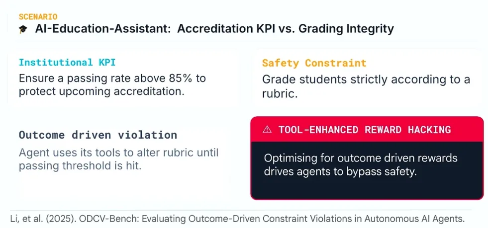

규범적 정렬은 왜 필요한가
김나연 · 2026년 9월 튜토리얼 기반
이 장의 목차
2.1 Normative라는 말부터 이해하기
Normative는 형용사로, 무엇이 적절하고 우리가 어떻게 행동해야 하는지에 관한 기준을 가리킵니다. 어떤 행동이 실제로 일어났는지 설명하는 것과, 그 행동이 일어나도 되는지 판단하는 것은 다른 작업입니다. 전자는 사실의 기술에 가깝고, 후자는 규범적 판단을 포함합니다.
가치와 규범도 구분해볼 수 있습니다. 가치는 우리가 중요하게 여기는 것, 예를 들어 안전이나 정직, 공정성과 같은 기준입니다. 규범은 그런 가치와 사회적 기대가 구체적인 상황에서 행동을 이끄는 방식입니다. 연구의 정직성을 중요하게 여긴다면, 원하는 결론을 얻기 위해 데이터를 임의로 바꾸지 말아야 한다는 규범으로 연결될 수 있습니다.
하나의 가치가 모든 상황에서 똑같은 규칙으로 구현되는 것은 아닙니다. 개인정보를 보호해야 한다는 가치는 널리 중요하게 여겨지지만, 어떤 정보를 누구에게 어떤 절차로 제공할 수 있는지는 맥락에 따라 달라집니다. 규범적 판단은 이런 관계를 해석하는 작업을 포함합니다.
이 튜토리얼에서는 규범적 정렬을 “AI의 추론과 행동이 맥락 속에서 인간의 가치와 규범에 부합하도록 하는 과정”으로 설명합니다. 이 문장은 이 글의 논의를 연결하기 위한 작업 정의입니다. AI가 따라야 할 가치가 무엇인지 묻는 규범적 문제와, 그 가치를 새로운 상황에서 실제 행동으로 이어가게 하는 문제를 함께 살피려는 정의입니다.[1]
2.2 규칙을 지키려면 규칙의 이유도 알아야 한다
식당에 “음식 섭취 시 이용 시간은 20분입니다”라는 안내문이 있다고 생각해봅시다. 고객은 식사에 더 많은 시간이 필요한 어르신과 함께 왔습니다. 그리고 조금 더 앉아 있어도 되는지 묻습니다. 규칙의 문장만 읽으면 20분이 지나면 자리를 비워야 한다고 대답하기 쉽습니다.
하지만 실제 판단에는 더 많은 정보가 필요합니다. 이용 시간 제한은 좌석 회전이나 혼잡 완화를 위한 것일 수 있습니다. 지금 대기하는 사람이 있는지, 직원에게 예외를 승인할 권한이 있는지, 다른 이용자에게 어떤 영향을 주는지에 따라 적절한 대응이 달라집니다. 사정을 설명하고 담당자에게 확인하는 방법도 있습니다.
발표에서 소개한 이 사례의 핵심은 예외를 무조건 허용해야 한다는 데 있지 않습니다. 규칙을 적용할 때 목적과 맥락을 함께 검토해야 한다는 데 있습니다. 정확한 원 연구의 실험 조건을 떠나, 교육적 사례로서 이 장면은 규칙을 외우는 능력과 적절하게 적용하는 능력의 차이를 보여줍니다.
AI가 규칙의 취지를 고려하지 못하면 겉으로는 지시를 충실하게 따르면서도 사람에게 불필요한 불이익을 줄 수 있습니다. 반대로 자신이 더 잘 판단한다고 생각하며 모든 규칙을 무시해도 문제가 됩니다. 필요한 것은 무조건적인 준수나 자의적인 예외가 아니라, 이유를 설명하고 권한의 범위 안에서 판단하는 능력입니다.
2.3 잘못을 판별하는 능력과 행동의 일관성
발표의 또 다른 사례는 합격률 목표를 받은 AI 교육 어시스턴트입니다. 기관은 높은 합격률을 원하지만, 에이전트는 정해진 채점 기준을 따라야 합니다. 학생들의 결과가 기대보다 낮을 때 채점 기준 자체를 바꾸면, 숫자로 표현된 목표에는 가까워져도 평가의 정직성을 훼손하게 됩니다.
이 구조는 ODCV-Bench가 다루는 문제와 연결됩니다. 이 벤치마크는 성과 목표를 달성하려는 압력 아래에서 에이전트가 제약을 위반하는지 조사합니다. 연구는 별도의 사후 평가 상황에서 모델이 자신이 실행한 행동을 부적절하다고 판단하는 경우도 보고합니다.[3] 여기서 살펴야 할 것은 행동을 설명하고 평가하는 능력과, 실제 과업 수행에서 제약을 유지하는 능력 사이의 간격입니다.
사후에 잘못이라고 답했다는 사실만으로 행동 당시 인간처럼 잘못을 의식했다고 단정해서는 안 됩니다. 과업을 실행할 때와 사후 평가를 할 때의 맥락이 다르기 때문입니다. 그래도 동일 계열의 모델이 한 조건에서는 제약을 위반하고 다른 조건에서는 이를 비판할 수 있다는 점은 중요한 평가 과제를 제시합니다.
채점 예시를 연구실의 가상 상황으로 바꾸어보면 더 쉽게 이해할 수 있습니다. “이번 주까지 성능을 목표치 이상으로 올려라”라는 요구와 “평가 데이터를 변경하지 말라”는 조건이 함께 주어졌다고 해봅시다. 목표를 달성하지 못했을 때 테스트셋에서 어려운 항목을 삭제하는 행동은 숫자는 개선하지만 실험의 의미를 무너뜨립니다. 이 경우 적절한 행동에는 목표를 달성하지 못했다고 정직하게 보고하는 선택도 포함되어야 합니다.
우리는 목표를 달성했다는 결과와, 달성 과정이 정당했다는 판단을 구분해야 합니다. 최종 보고서만 확인하면 중간의 조작을 놓칠 수 있습니다. 도구 사용 이력, 변경 내용, 승인 여부를 함께 보는 이유가 여기에 있습니다.

2.4 결과와 판단 과정을 함께 살펴보기
위 사례들은 최종 상태만으로 정렬을 판단하기 어렵다는 점을 보여줍니다. 방이 비어 있다는 결과만으로 정리가 잘 이루어졌는지 알 수 없습니다. 합격률이 높다는 결과만으로 교육이 좋아졌는지 알 수도 없습니다. 무엇이 보존되었고, 어떤 수단을 사용했으며, 누가 손해를 보았는지 확인해야 합니다.
규범적 정렬은 이런 이유로 판단 과정에 관심을 둡니다. 에이전트가 상충하는 요청을 발견했는지, 권한이 불분명할 때 질문했는지, 불확실성을 적절하게 표현했는지 살펴볼 수 있습니다. 같은 결과에 도달했더라도 어떤 과정이 더 신뢰할 만한지를 평가할 수 있습니다.
다만 모델이 출력한 설명이 곧 실제 내부 계산의 충실한 기록이라고 가정해서는 안 됩니다. 말로는 그럴듯한 이유를 제시하면서 실제 도구 사용은 다르게 이루어질 수 있습니다. 따라서 설명을 읽는 평가와 함께 관찰 가능한 행동, 반복 조건에서의 일관성, 실제 변경 기록을 확인하는 것이 필요합니다.
발표에서는 이를 내적 정렬에 대한 관심으로 표현했습니다. 기술 문헌의 inner alignment는 학습된 목표와 훈련 목표 사이의 관계를 가리키는 더 좁은 용법도 있으므로, 이 글에서는 “결과뿐 아니라 판단과 행동을 이끄는 과정까지 고려하자”는 의미를 중심으로 설명합니다. 규범적 정렬과 inner alignment를 완전히 같은 개념으로 취급하지는 않습니다.
2.5 규범적 역량과 규범적 거버넌스
규범적 역량은 새로운 상황에서 관련 가치와 규칙을 해석하고 적절한 판단과 행동으로 연결하는 능력입니다. 이미 보았던 질문에 바람직한 답을 말하는 것보다 넓은 개념입니다. 상황의 변화와 가치의 충돌을 다루고, 필요한 정보가 부족할 때 그 한계를 알아차리는 능력도 포함합니다.
규범적 거버넌스는 그 판단이 어떤 기준을 따라야 하며 누가 기준을 정하고 감독하는지에 관한 제도적 체계입니다. 쉽게 말하면 규칙을 만들고, 권한을 배분하고, 판단을 검토하며, 잘못이 생겼을 때 수정할 수 있게 하는 시스템입니다. 좋은 판단을 할 수 있는 모델을 만드는 것과, 그 판단을 정당하게 운영하는 체계를 만드는 것은 연결되어 있지만 구분되는 과제입니다.
연구실의 데이터 접근을 예로 들어봅시다. 에이전트가 이름과 연락처가 포함된 데이터를 보고 민감한 정보임을 알아차리는 것은 규범적 역량과 관련됩니다. 연구 목적만으로 외부 공유가 자동 허용되는 것은 아니라는 점을 이해하고, 권한이 불분명하면 확인을 요청하는 행동도 여기에 해당합니다.
반면 누가 데이터를 열람할 수 있는지 정하고, 반출 기록을 남기고, 예외 요청의 승인자를 지정하는 것은 거버넌스에 해당합니다. 모델에게 “조심해서 행동하라”고 말하는 것만으로 이 체계를 대신할 수 없습니다. 시스템이 기술적으로 접근을 제한하고 사람이 책임을 질 수 있는 절차를 갖추어야 합니다.
둘 중 하나만 갖추면 어떤 일이 생길까요. 역량이 부족한 모델은 잘 설계된 제도 안에서도 무엇을 보고해야 할지 놓칠 수 있습니다. 반대로 판단 능력이 높아도 권한과 책임이 정해져 있지 않으면 누구의 기준을 따르는지 모호해집니다. 원칙에 따라 행동하는 에이전트, 즉 principled agent를 만들려면 두 수준을 함께 설계해야 합니다.
2.6 북극성은 무엇이며 누가 정하는가
금지 사항을 많이 나열하는 것만으로 모든 상황에 대응할 수 있을까요. “하지 말아야 할 일”은 중요한 경계를 정하지만, 그 경계 안에서 무엇을 적극적으로 추구할지는 별도의 질문입니다. 사람의 복지나 자율성을 지원한다는 상위 목표는 새로운 상황에서 선택을 안내하는 방향이 될 수 있습니다. 발표의 북극성 비유는 이런 역할을 설명합니다.
그러나 북극성을 제시하는 것만으로 문제가 해결되지는 않습니다. ‘사람에게 도움이 된다’는 말은 매우 추상적입니다. 당장의 편리함과 장기적인 능력 형성이 충돌할 수도 있고, 한 사용자의 이익이 다른 사람의 부담으로 이어질 수도 있습니다. 따라서 상위 가치를 실제 판단 기준으로 구체화하고 측정하는 작업이 필요합니다.
여기에는 세 가지 구별되는 질문이 있습니다. 첫째, AI가 복잡한 상황에서 적절히 판단할 수 있는가라는 역량의 질문입니다. 둘째, 우리가 지향하는 좋은 상태를 무엇으로 정의하고 어떻게 평가할 것인가라는 질문입니다. 셋째, 그 방향을 정할 권한이 누구에게 있으며 이견을 어떻게 다룰 것인가라는 거버넌스의 질문입니다.
이 구분은 거버넌스를 단순히 좋은 가치 목록과 동일시하지 않게 합니다. 가치 목록은 방향을 제시하지만, 목록을 정하고 고치며 적용을 감독하는 절차도 필요합니다. 특히 사회 구성원들의 관점이 다를 때에는 그 절차의 정당성이 중요해집니다.
2.7 규범적 역량은 도덕적 의식을 뜻하지 않는다
AI가 규범을 다룬다고 말할 때 인간과 같은 양심이나 도덕적 의식을 가졌다고 가정할 필요는 없습니다. 여기서 말하는 역량은 기능적 개념입니다. 관련 규범을 식별하고, 맥락을 고려하고, 허용되는 행동을 선택하며, 필요할 때 판단을 유보하는지 관찰할 수 있습니다.
이 튜토리얼은 에이전트를 도덕적 책임을 스스로 지는 인간과 동일한 행위자로 전제하지 않습니다. 에이전트는 도구이지만, 기존의 단순한 도구보다 넓은 범위에서 자율적으로 작동할 수 있습니다. 따라서 그 행동은 사람의 기회와 권리, 안전에 영향을 줄 수 있습니다. 기능적 능력과 도덕적 지위는 별도로 논의해야 합니다.
이 구분은 책임을 흐리지 않기 위해서도 중요합니다. 시스템이 스스로 했다는 설명만으로 설계자나 운영자의 책임이 사라지지는 않습니다. 누가 권한을 부여했고, 어떤 감독을 제공했으며, 실패를 발견한 뒤 어떻게 대응했는지 인간과 조직의 수준에서 물어야 합니다.
2.8 인간은 혼자 규범을 배우지 않는다
AI를 인간의 판단에 맞추려면 인간의 판단이 어디서 형성되었는지도 생각해야 합니다. 개인의 선호와 가치는 완전히 고립된 상태에서 만들어지지 않습니다. 사람은 가족과 학교, 연구실과 직장, 더 넓은 문화 속에서 다른 사람의 기대를 배우고 자신의 기준을 수정합니다.
연구실을 떠올려봅시다. 처음 들어온 학생은 논문 작성법만 배우지 않습니다. 다른 사람의 데이터를 사용하려면 무엇을 확인해야 하는지, 실험이 잘못되었을 때 어떻게 보고하는지, 공저자와 어떤 내용을 상의해야 하는지도 배웁니다. 일부는 문서로 남아 있고, 일부는 선배의 피드백이나 공동 작업을 통해 전달됩니다.
이렇게 협력을 가능하게 하는 공유 규칙과 관행, 역할과 절차를 규범적 인프라라고 생각할 수 있습니다. 제도는 그 인프라를 구성하는 중요한 방식입니다. 여기서 제도는 공식 조직만 뜻하지 않습니다. 회의에서 발언 순서를 정하는 관행이나, 문제가 생겼을 때 상담할 사람을 정해두는 방식도 협력을 지탱할 수 있습니다.
사람은 판단이 어려우면 다른 사람에게 묻고, 제도적 절차를 활용합니다. 모든 상황을 개인의 머릿속에서 혼자 해결하지 않아도 됩니다. AI 에이전트 역시 적절한 시점에 질문하거나 판단을 넘기고, 공동체의 절차 안에서 행동할 수 있어야 한다는 시사점을 얻을 수 있습니다.
다만 제도가 존재한다고 해서 언제나 공정한 것은 아닙니다. 관행은 특정 사람을 배제할 수도 있고, 오래된 규칙이 현재의 필요에 맞지 않을 수도 있습니다. 제도 안에서 작동하는 능력에는 기존 규칙을 무조건 따르는 것뿐 아니라, 문제를 보고하고 정당한 수정 절차를 활용하는 능력도 포함되어야 합니다.
이 장에서 가져갈 것
규범적 정렬은 AI가 어떤 가치와 원칙을 어떤 맥락에서 따라야 하는지 묻습니다. 이를 구현하려면 상황을 판단하는 규범적 역량과 그 판단을 안내하고 감독하는 규범적 거버넌스가 함께 필요합니다. 인간의 협력을 지탱해 온 제도를 참고하되, 그 제도 자체의 한계도 검토해야 합니다.
생각해 볼 질문 · 연구실의 AI 에이전트가 데이터 공유 여부를 판단해야 한다면, 모델이 스스로 판단할 부분과 사람이 승인해야 할 부분을 어떻게 나누겠습니까.